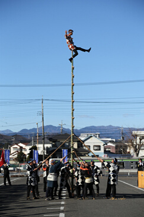
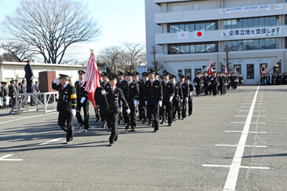
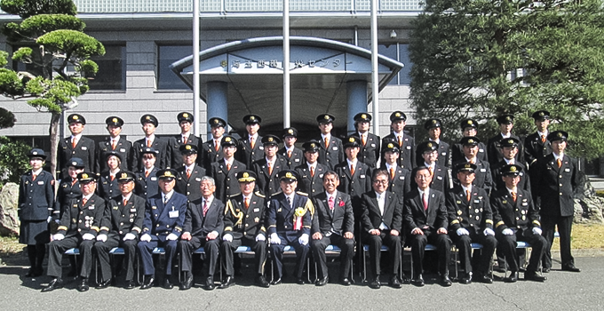

平成30年度TOPICS
□2019年3月29日 第2分団「火災出動」（2019.3.24/25）を追加しました。
□2019年3月29日 第4分団「放水訓練」（2019.3.22）を追加しました。
□2019年3月18日 は組「第8回震災復興元気市」を追加しました。
□2019年3月15日 第10分団「火防巡視」（2019.3.10）を追加しました。
□2019年3月15日 第4分団「火防巡視」（2019.3.10）を追加しました。
□2019年3月15日 第7分団「ムーミンバレーパーク災害対応訓練」を追加しました。
□2019年3月1日 第10分団「ソフトボール大会」（2019.2.24）を追加しました。
□2019年3月1日 第3分団「ソフトボール大会」（2019.2.24）を追加しました。
□2019年2月19日 は組「火防巡視」を追加しました。
□2019年2月19日 第7分団「活動内容」を追加しました。
□2019年2月15日 第1分団「活動内容」を追加しました。
□2019年2月15日 第9分団「出初式」を追加しました。
□2019年1月29日 第10分団「奥武蔵駅伝」（2018.1.27）を追加しました。
□2019年1月28日 第4分団「活動内容」を追加しました。
□2019年1月16日 第11分団「出初式」を追加しました。
□2019年1月8日 第2分団「活動内容」を追加しました。
□2019年1月7日 は組「活動内容」を追加しました。
□2019年1月7日 第10分団「活動内容」（2018.1.6）を追加しました。
□2018年12月20日 第4分団「活動内容」を追加しました。
□2018年12月19日 は組「駿台学生ガイダンス」を追加しました。
□2018年12月10日 第9分団「活動内容」を追加しました。
□2018年12月10日 第11分団「活動内容」を追加しました。
□2018年11月30日 は組「活動内容」を追加しました。
□2018年11月30日 第6分団「特別点検」（2018.11.24）を追加しました。
□2018年11月30日 第5分団「特別点検」（2018.11.24）を追加しました。
□2018年11月26日 第10分団「特別点検」（2018.11.24）を追加しました。
□2018年11月26日 第3分団「特別点検」（2018.11.24）を追加しました。
□2018年11月21日 第3分団「特別点検予習」（2018.11.18）を追加しました。
□2018年11月21日 第10分団「飯能まつり警備」（2018.11.4）を追加しました。
□2018年11月19日 第10分団「特別点検予習」（2018.11.18）を追加しました。
□2018年11月19日 第2分団「特別点検予習」（2018.11.18）を追加しました。
□2018年11月2日 第3分団「全団員訓練・交通法規講習」（2018.10.28）を追加しました。
□2018年10月30日 は組「活動内容」を追加しました。
□2018年10月30日 第10分団「全団員訓練／高山不動防災訓練」（2018.10.28）を追加しました。
□2018年10月29日 第11分団「活動内容」を追加しました。
□2018年10月22日 は組「自主防災訓練」（2018.10.21）を追加しました。
□2018年10月15日 第1分団「活動内容」を追加しました。
□2018年10月15日 第10分団「吾野地区体育祭」（2018.10.14）を追加しました。
□2018年10月11日 第9分団「活動内容」を追加しました。
□2018年10月10日 第10分団「白鬚神社例祭警備」（2018.10.7）を追加しました。
□2018年10月1日 第3分団「普通救命講習」（2018.9.26）を追加しました。
□2018年10月1日 第2分団「普通救命講習」（2018.9.26）を追加しました。
□2018年9月28日 は組「活動内容」を追加しました。
□2018年9月26日 第3分団「救助機資材訓練」（2018.9.23）を追加しました。
□2018年9月26日 は組「活動内容」を追加しました。
□2018年9月7日 第4分団「第二区防災訓練」を追加しました。
□2018年9月3日 第3分団「合同訓練」（2018.9.2）を追加しました。
□2018年8月30日 第2分団「柳原地区防災訓練」（2018.8.26）を追加しました。
□2018年8月27日 第3分団「飯能消防団消防操法大会」（2018.6.17）を追加しました。
□2018年8月27日 は組「一丁目クラブ自主防災訓練」を追加しました。
□2018年8月27日 第4分団「活動内容」（2018.6.17～2018.7.1）等を追加しました。
□2018年8月16日 第10分団「活動内容」（2018.6.17～2018.8.11）を追加しました。
□2018年8月16日 第8分団「消防操法大会」（2018.6.17）を追加しました。
□2018年7月30日 第5分団「埼玉西部支部消防操法大会」（2018.7.1）等を追加しました。
□2018年7月25日 は組 「第2ブロック女性団員研修」を（2018.7.7）を追加しました。
□2018年7月19日 第6分団「飯能消防団消防操法大会」（2018.6.17）を追加しました。
□2018年7月18日 第9分団「飯能消防団消防操法大会」（2018.6.17）を追加しました。
□2018年7月11日 は組 "活動状況"を（2018.6.3, 7.1, 7.8）を追加しました。
□2018年7月4日 第28回 埼玉県消防協会埼玉西部支部消防操法大会結果を追加しました。
□2018年6月28日 第5分団「消防操法大会報告会」（2018.6.23）等を追加しました。
□2018年6月28日 第7分団「第31回飯能消防団消防操法大会」（2018.6.17）等を追加しました。
□2018年6月28日 第2分団「第31回飯能消防団消防操法大会」（2018.6.17）を追加しました。
□2018年6月21日 「第31回飯能消防団消防操法大会成績表」（2018.6.17）を追加しました。
□2018年6月21日 は組「操法大会」（2018.6.17）を追加しました。
□2018年6月14日 第5分団「操法大会選手紹介」を追加しました。
□2018年6月14日 第7分団「操法訓練」（2018.6.10）等を追加しました。
□2018年6月14日 第11分団「飯能新緑ツーデーマーチ警備」（2018.5.26）を追加しました。
□2018年6月14日 第4分団「操法訓練（夜間訓練）」（2018.5.28）等を追加しました。
□2018年6月4日 第10分団「土砂災害全国防火訓練」（2018.6.3）を追加しました。
□2018年6月4日 第5分団「操法訓練」（2018.5.28）等を追加しました。
□2018年6月4日 第2分団「飯能新緑ツーデーマーチ警備」（2018.5.26）を追加しました。
□2018年6月4日 第9分団「全団員訓練」（2018.5.20）を追加しました。
□2018年5月30日 第10分団「飯能新緑ツーデーマーチ」（2018.5.27）を追加しました。
□2018年5月29日 は組「飯能新緑ツーデーマーチ」（2018.5.26・27）を追加しました。
□2018年5月22日 は組「全団員訓練」（2018.5.20）を追加しました。
□2018年5月8日 第9分団「入団式・開所式」（2018.4.8）を追加しました。
□2018年5月8日 第2分団「操法訓練」（2018.5.1）を追加しました。
□2018年5月1日 第10分団「飯能消防団入団式」（2018.4.8）を追加しました。
□2018年4月26日 第11分団「飯能消防団入団式」（2018.4.8）を追加しました。
□2018年4月25日 第3分団「飯能消防団入団式」（2018.4.8）を追加しました。
□2018年4月17日 第2分団「飯能消防団入団式」（2018.4.8）を追加しました。
□2018年4月11日（水）は組「市役所新入職員向けガイダンス」（2018.4.5）他を追加しました。
■平成31年飯能消防団出初式
新春恒例の飯能消防団出初式を下記のとおり挙行いたします。また、飯能鳶土建組合若鳶会がはしご乗りの演技をご披露いたします。
日時：平成31年1月6日（日）午前9時30分から
※はしご乗りの演技は午前9時20分ごろを予定しております。
会場：飯能市役所西側駐車場
その他：一般の方もご観覧いただけますが、駐車場の用意はございませんので、ご来場の際は公共交通機関をご利用ください。

飯能鳶土建組合若鳶会によるはしご乗り（平成30年）

観閲行進（平成30年）
■2018年4月8日（日）入団式
飯能日高消防署において、多数のご来賓のご臨席を賜り、平成30年度飯能消防団入団式が挙行されました。63名の昇格・異動があり、新たに入団した28名の新入団員（平成29年度途中入団者含む）には、梨木団長から辞令が交付されました。入団式の後には消防団員の基本となる礼式や各個・小隊訓練を実施しました。
